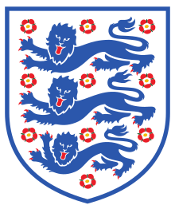
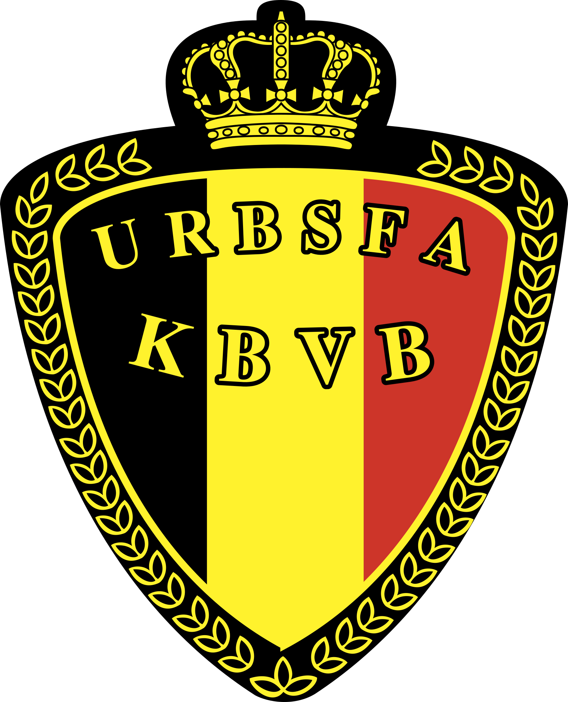

Overview
The U.S. soccer team failed to qualify for the 2018 World Cup in Russia. So what are American soccer fans to do? Wither away in an apathetic state of despair and hopelessness? Not a chance. This is the perfect opportunity to bandwagon and throw one’s weight behind a global powerhouse or surprise underdog! So who will the U.S. rally behind as the world’s eyes turn towards the tournaments semi-final matches? Using locational data from Twitter’s Search API and a natural language algorithm, I was able to perform an in depth sentiment analysis on over 20,000 user tweets from the week of the semi-final matches (July 7 - 14). The results, visualized by state here, might not be what you expect.
The Teams
Croatia
Hot off a nail-biter shootout win over Russia, this small Balkan underdog has captivated the American psyche with their exhilarating play. The gritty Croats were clear fan favorites in California and Texas, capturing 40% and 37% of the positive tweets in those respective states.
 England
"It's coming home." The Three Lions have been on a mission this World Cup! This young, hungry squad have proven the cynics wrong game after game and seem poised to deliver the champions trophy back to the birthplace of the sport. The English won the hearts of the eastern seaboard, capturing prevailing sentiments in New York (39%) and Florida (35%).
France
If there is one squad truly paying homage to the "beautiful game" with their play, it is France. They've dominated highlight reels with one stunning goal after another. There wasn't a lot of Twitter action around Les Bleus, but they did manage to capture a favorable tweet in South Dakota!
 Belgium
The powerhouse Belgians have more Premiere League players (12 of the 23 man squad) than any other team in the World Cup. They are a heavy favorite amongst those in the know. Their Goliath status may have dampened enthusiasm stateside as the Red Devils only garnered love in a handful of states in the southwest (Utah and New Mexico).